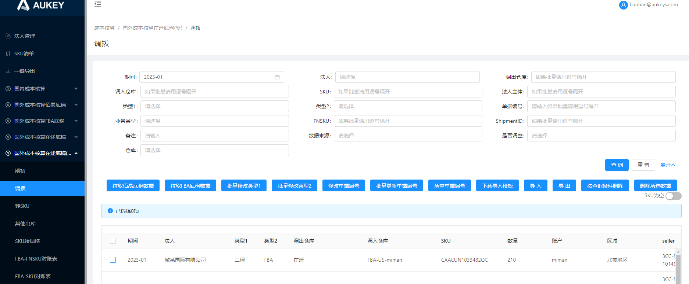

原需求：https://qbyq56.axshare.com/#id=czziyd&p=3_2_%E8%B0%83%E6%8B%A8&g=1
现需求：
1.按钮控制说明：
1.1【拉取佰易底稿】：
1.1.1【类型1】新增取值逻辑：当【业务类型】为“小平台退仓”时，【类型1】取“退仓”；
1.1.2【类型2】新增取值逻辑：当【业务类型】为“小平台退仓”时，【类型2】取“小平台”；
1.2【批量修改类型2】：【类型2】下拉框增加选项“小平台”；
1.3【下载导入模板】【导入】：【类型2】字段值支持导入“小平台”；
2.字段属性：搜索栏
2.1【类型2】：下拉框新增选项“小平台”；
2.2【仓库】：下拉框新增选项“小平台-退仓-在途”；
